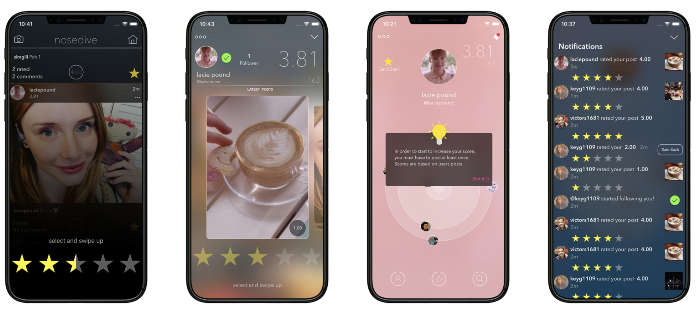

Portfolio Article • UX Ethics • HCI
Designing for Approval
An Ethical UX Analysis of Social Ratings Interface from Black Mirror: Nosedive. An Exploration of How Ratings, Visibility, and Feedback Loops Can Influence Agency, Autonomy, Privacy, Consent, Well-being, Equity, and Authenticity.
Overview
When a simple rating pattern becomes a system of control.
In Nosedive, every person is evaluated through a five-star social rating system. The score is public, constantly updated, and directly connected to social status, housing, travel, and opportunity.
First glance reveals the interface to be clean and inviting, with a positive social element. It employs common UX tropes such as ratings, user profiles, immediate feedback, and reputation scores. But here lies the ethical problem: once the requirements become mandatory and tied to basic necessities, the design doesn’t help the user anymore; rather, it forces him or her into certain actions.
The purpose of this case study is to analyze the design ethics from a human-centered perspective, emphasizing such values as autonomy, human dignity, privacy, consent, psychological health, social justice, and authenticity. Thus, we seek to understand why and how a good-looking interface can turn out harmful for its users.
System Features
The interface is built from familiar UX patterns.

Ethical Evaluation
Feature → Value → Verdict → Explanation
This table connects specific system features to ethical values and identifies whether each feature upholds or violates that value.
Feature
Ethical Value
Verdict
Explanation
Real-time social rating
Human agency
Violates
The system pressures users to act for approval instead of acting from personal intention. This reduces meaningful user control.
Public score visibility
Privacy
Violates
Personal behavioral data is exposed constantly, removing boundaries between private life and public identity.
Mandatory participation
Consent
Violates
Users cannot meaningfully opt out. Participation is required to function socially and economically.
Score-gated services
Social fairness
Violates
High-score users receive better access while low-score users are pushed further into exclusion.
Instant feedback loop
Psychological well-being
Violates
Constant scoring increases anxiety, self-monitoring, cognitive load, and emotional pressure.
Profile curation tools
Authenticity
Violates
Users perform idealized identities instead of expressing honest emotion or forming genuine relationships.
Human Agency
Agency becomes performance.
Friedman and Kahn describe human agency as the ability to act intentionally and with meaningful control. In Nosedive, users still make choices, but those choices are shaped by fear of being rated poorly. The system does not physically force behavior, but it creates a social environment where authentic action becomes risky.
This is what makes the interface ethically dangerous: it creates the feeling of freedom while quietly controlling the incentives behind every interaction.
Authenticity
Connection becomes strategy.
Turkle’s work on authenticity helps explain why this system feels emotionally hollow. When digital systems reward performance, users may begin to treat relationships as staged interactions. In Nosedive, smiles, compliments, and friendships become tools for gaining points.
The result is a culture where people are constantly visible but rarely honest. The interface rewards likability, not truth.
HCI Impact
Feedback creates cognitive load.
Proctor and Van Zandt’s human factors concepts are useful here because the system forces users to process constant feedback. Users must monitor their own behavior, predict others’ reactions, and check score changes in real time.
This overload turns ordinary social life into a high-pressure task environment, increasing stress and reducing emotional freedom.
Ethical Redesign
How the system could be redesigned with human values in mind.
A more ethical version of this system would reduce coercion, protect privacy, and support reflection instead of constant judgment.
Make ratings contextual
Limit ratings to specific services instead of turning a whole person into one public number.
Remove public scores
Protect privacy by making feedback private, temporary, and controlled by the user.
Require opt-in consent
Allow users to choose when they participate and what information is shared.
Delay feedback
Reduce anxiety by avoiding instant score changes after every interaction.
Use qualitative feedback
Replace numerical judgment with constructive, specific feedback where appropriate.
Design for recovery
Give users fair ways to appeal, reset, improve, and avoid permanent social punishment.
Conclusion
Design is never neutral.
In Nosedive, we see how even mundane UX concepts turn out to be dangerous once they are applied to issues of identity, status, and privilege. Rating, profiling, and positive reinforcement mechanisms can appear harmless until it comes to their impact on human behavior and social interactions.
When we work as UX designers, the aim cannot be limited to merely designing an effective and aesthetically pleasing experience. Instead, the objective is to design an experience that allows for freedom of choice, autonomy, privacy, consent, mental health, equity, and authenticity.
References
Course readings used in this analysis.
Friedman, B. & Kahn, P. H. (1992). Human agency and responsible computing: Implications for computer system design.
Friedman, B. & Kahn, P. H. (2003). Human values, ethics, and design.
Proctor, R. W. & Van Zandt, T. (2008). Human Factors: In Simple and Complex Systems.
Turkle, S. (2007). Authenticity in the age of digital companions.